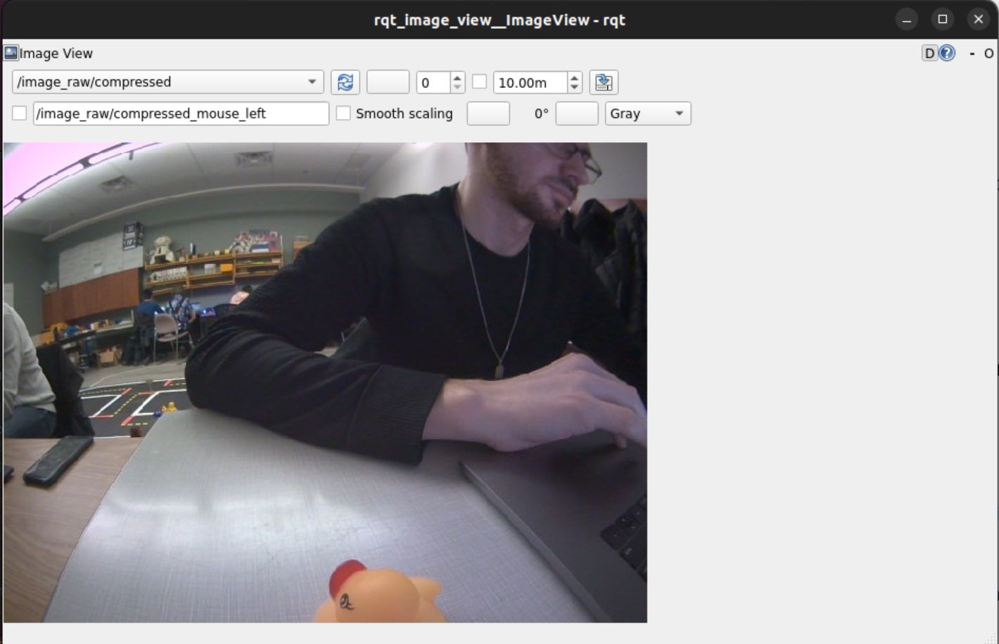
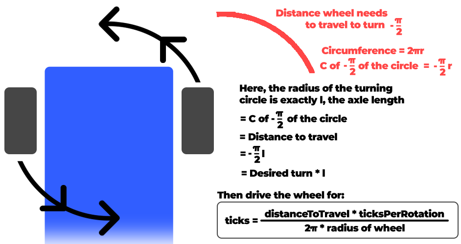
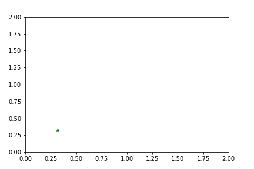
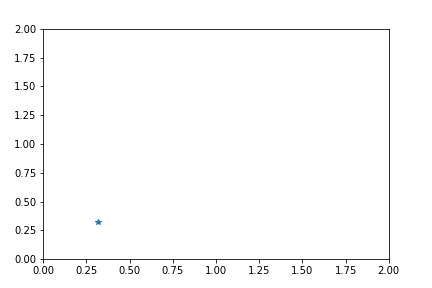

Going forward in a straight line is difficult. Rotating is pretty hard too. Now lets put them together with LED lights and do a circle as well. This was a pretty great experiment and was super eye opening about the kinematics of robotics.
Below you can see the screenshot to view the camera image in my custom topic using rqt_image_view.

This was the code used to generate the custom topic to view the above image. Looking at it again, it's pretty trivial. However, doing it for the first time definitely took some searching and meddling around.
#!/usr/bin/env python3
import os
import rospy
from duckietown.dtros import DTROS, NodeType
from std_msgs.msg import String
#found this by: running gui tools -> cmd 'rostopic list' -> find topic you want -> 'rostopic info [topic name]'
#then import the files wanted
from sensor_msgs.msg import CompressedImage
class MyPublisherNode(DTROS):
def __init__(self, node_name):
# initialize the DTROS parent class
super(MyPublisherNode, self).__init__(node_name=node_name, node_type=NodeType.GENERIC)
# construct publisher string and publisher
publisherString = "/" + os.environ['VEHICLE_NAME'] + "/camera_node/image/compressed"
self.pub = rospy.Publisher('chatter', String, queue_size=10)
def run(self):
#get the duckie bot name
duckiebotname = os.environ['VEHICLE_NAME']
# publish message every 1 second
rate = rospy.Rate(10) # 1Hz
while not rospy.is_shutdown():
message = "Hello from " + duckiebotname
rospy.loginfo("Publishing message: '%s'" % message)
self.pub.publish(message)
rate.sleep()
if __name__ == '__main__':
# create the node
node = MyPublisherNode(node_name='my_publisher_node')
# run node
node.run()
# keep spinning
rospy.spin()
Question: What is the relation between your initial robot frame and world frame?
Before we can go into the relation between the two, lets make sure we know what each frame represents! The robot frame signifies the transformations and translations occurring to the robot in relation to the robot. The world frame represents the space the robot is operating in or moving through. As the robot moves, the coordinates for the robot and world frame are update accordingly. In our lab, [0,0,0] is the initial robot frame, and [0.32,0.32,0] is usually the launch point in the world frame. We can use the concepts of forward and inverse kinematics to find the relation between the two frames.
In theory, this is no problem; however in practice, serious issues can occur. The encoders and motors used on the duckiebots are not ideal, however they are good for their purposes. When things like slippage or unforeseen ticking of the motor happens, these causes discrepancies in the distance calculations and therefore cause errors in the coordinate systems of the robot and world frame.
Basically, dead reckoning = bad. (That's harsh. Let's say "could be much better 🚢)
Question: How do we transform between the robot and world frame?
Using this equation, we were able to convert between the robot and the world frame. (Please note the world frame may be denoted with subscript in remainder of this report):
Simplified, this turns into:
Taking the following general equation:
where is the speed of the wheel and is the distance between the wheel and the the centre of rotation. We then modified our the general equation to create relations used specifically for our duckiebots. This helps us to represent the movement of the duckiebot for the robot and the world frame. The relations used are:
The Duckumentation also helps us to convert distance based on ticks of the encoder and the radius of the wheel based on the following equation:
Wow, this one was a doozy. At first the task seemed relatively simple but as you'll soon see, it wasn't. At the beginning we weren't really considering the frames, just trying to get it moving and going. While that is a good approach, it definitely led to some difficulties and needs to refactor our code.
Question: How do you convert the location and theta at the initial robot frame to the world frame?
Regarding (world frame) and (robot frame), there is no transform necessary. In our case, both and are identical.
The mapping for and can be found using equations 1 through 4.
Three of the kinematic focused functions created for this lab were:
DriveInCircle(radius, speed)
RotateRadians(angle, speed)
MoveDistance(metres, speed)
Each of these functions were designed in mind to update the world frame. However, we made the assumptions that MoveDistance() would never change and RotateRadians() would never change or . While this is not very precise, it does serve our purposes well enough. At the time of writing this report, the DriveInCircle function does not update or due to time limitations.
Question: Can you explain why there is a difference between actual and desired location?
There are a few reasons why there could be differences between the actual and desired location:
In our tests, after driving forward and backward 1.25m, we measured an error in each coordinate of: (+0.24m, -0.01m, -0.2rad).
Question: Which topic(s) did you use to make the robot move? How did you figure out the topic that could make the motor move?
The topics we used were:
Figuring out the topic to make the motors move was a bit of an arduous task; there was a lot of guess work and documentation reading done before we finally got it. Really it boiled down to:
dts start_gui_tools --vnc DUCKIEBOT_NAME in the terminalrostopic listrostopic info [topic name]At that point you will be able to import the necessary packages. ie)
from sensor_msgs.msg import CompressedImage
Question: Which speed are you using? What happens if you increase/decrease the speed?
We use a speed of 0.5 for almost all movements (The duckiebots range is 0-1 for speed). For some of the turns, a lower speed was used for more precision.
As noted above, a lower speed can help us to increase our precision and accuracy. With lower speeds the duckiebot is also more prone to getting stuck.
Higher speeds help the duckiebot to move easier as well as come back up on the mat if it slips off. It also can create a bit more slippage and in turn ruin or calculations for the robot and world frame.
Using a value of 0.5 gives us the best power to precision ratio for this lab.
Spinning was a pretty complex task; thankfully my lab partner Cameron was super smart and made a helpful diagram (shown later) to easily visualize our solution!
Question: How did you keep track of the angle rotated? After messing around with some of the forward and inverse kinematics, we decided to act like physics students and draw out our problem. Lo and behold, those physics people are really onto something. A diagram of what we did can be seen here:

When working with the duckiebots, one thing to internalize is that each motor is independent. Therefore, we needed to take the average ticks over both wheels when doing these calculations for rotation as well as distance. Doing this method helped us to create a good rotation function.
Question: Which topic(s) did you use to make the robot rotate?
The same topics were used for rotation as they were in distance:
Question: How did you estimate/track the angles your DuckieBot has traveled?
Utilizing all equations stated earlier in the lab we were able to update the world and robot frame each iteration of the clock.
Question: Does your program exit properly after you finish all the above tasks? Is it still running even if you shut down the program?
The program does exit properly after finishing the tasks. We used rospy.signal_shutdown() to exit our program. We also added a sleep timer so all actions could complete before shutting everything down.
Now we can go in a straight line and turn! The excitement is through the roof! Now it's time to combine some actions and add a few more. Our goal now is to do the following:
Question: What is the final location of your robot as shown in your odometry reading?
The duckiebot determined that its final position was when in actuality it was quite close to the pre-determined origin of . We didn't record the error in this part but approximate it to be around a third of a metre.
Question: Is it close to your robot’s actual physical location in the mat world frame?
Sadly, no. Due to errors like slippage and wheel drift, errors in measurement begin to compound rapidly and the duckiebot is prone moving off the mat world frame.
Save your odometry (in the world frame) to your rosbag and shut down. Display the bag file information in a way of your choice and include your written report.
Unfortunately, we ran out of time to troubleshoot grabbing the rosbag data. We tried to search through the duckumentation but came up to no avail. Instead, we pivoted and decided to create a CSV file and save the data from each clock cycle. We hope to find more resources on grabbing the rosbag data as it will be beneficial in the future for using this platform.
To view the CSV file for Exercise 1.3 please click here.
To view the CSV file for Exercise 2 please click here.
My lab partner, Cameron, also made these really awesome visuals with the use of Google Colab to be able to get a feel for what the data means!

Note for this below graph, this represents where the robot thinks it is. There has been no PID implemented so we expect some error seen in the real world vs the simulation.

One of the biggest challenges we ran into was setting up two ROS nodes that interact with one another. I dove into the ROS tutorials and read as much documentation as I could. Sadly in the end, we couldn't figure it out and ended up having to do a bit of hacky stuff in one node to get our code working. It "worked" but I do want to learn the proper way to deal with more nodes as this will be critical for my learning more about robotics.
Another challenge I had was actually trying to find documentation on some of the problems I was facing. I'm quite used to be being able to go look up a problem on Stack Overflow or reading official documentation about functions, classes etc. However, for duckietown the documentation is scarce if at all there and sometimes calls for the necessity of diving into the source code. I couldn't even tell you how much of the dt-core library I was reading on github.
Finally, another challenge I had wasn't technical related at all, it was just burn out. I was moving so fast and doing so much in the first week and half; coming in on weekends and extra days, sometimes not standing up for hours at a time. This caused me to get a significant portion of ground work layed for our team, but basically rendered me useless afterwards. For the next labs I want to work more on spacing out my time in the lab.